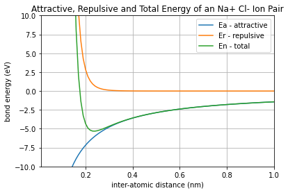
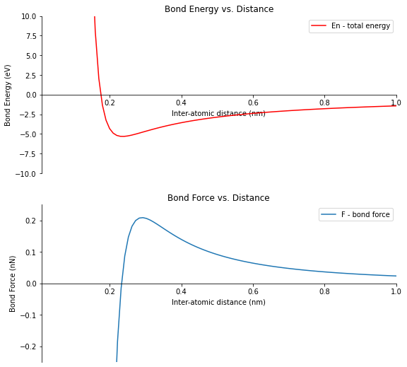

2.1. Bond Energy vs. Distance¶
# imports
import numpy as np
import matplotlib.pyplot as plt
# if using a Jupyter notebook
%matplotlib inline
# create an array of inter-atomic distances, r
r = np.arange(0.01,1.01,0.01) #start, stop(exclusive), step
# calculate the energy terms
Ea = -1.436/r
Er = (7.32e-6)/(r**8)
En = Ea + Er
# plot the three energy terms
plt.plot(r,Ea,r,Er,r,En)
# customize the plot
plt.xlim([0.01, 1.00])
plt.ylim([-10, 10])
plt.xlabel('inter-atomic distance (nm)')
plt.ylabel('bond energy (eV)')
plt.title('Attractive, Repulsive and Total Energy of an Na+ Cl- Ion Pair')
plt.legend(['Ea - attractive','Er - repulsive','En - total'])
plt.grid()
# save the plot
plt.savefig('Energy_vs_Distance_Plot.png')
# show the plot
plt.show()

# differentiate the Engergy vs. distance curve to create a force vs. distance curve
F = np.diff(En) # Bond force in eV/nm
F = 1.60217*F # Bond force in nN
r_F = np.linspace(0.01,1.00,len(F))
# create a figure with two plots on it, one plot for the Engergy curve and one plot for the force curve
# create the figure and axis objects
fig, (ax1,ax2) = plt.subplots(nrows=2,ncols=1,figsize=(9,9))
# create the energy vs distance curve
ax1.plot(r,En,'red')
ax1.set_xlim([0.01,1.00])
ax1.set_ylim([-10,10])
ax1.set_title('Bond Energy vs. Distance')
ax1.set_xlabel('Inter-atomic distance (nm)')
ax1.set_ylabel('Bond Energy (eV)')
ax1.legend(['En - total energy'])
ax1.spines['top'].set_color('none')
ax1.spines['right'].set_color('none')
ax1.spines['bottom'].set_position(('data', 0.0))
# create the force vs distance curve
ax2.plot(r_F,F)
ax2.set_xlim([0.01, 1.00])
ax2.set_ylim([-0.25, 0.25])
ax2.set_title('Bond Force vs. Distance')
ax2.set_xlabel('Inter-atomic distance (nm)')
ax2.set_ylabel('Bond Force (nN)')
ax2.legend(['F - bond force'])
ax2.spines['top'].set_color('none')
ax2.spines['right'].set_color('none')
ax2.spines['bottom'].set_position(('data', 0.0))
# save and show the plot
plt.savefig("Energy_and_Force_plot.png")
plt.show()

# calcuate the equalibrium bond energy and the equalibrium bond distance
eq_bond_E = np.min(En)
print(f'Equalibrium Bond Energy: {round(eq_bond_E,2)} eV')
Equalibrium Bond Energy: -5.32 eV
eq_bond_d = r[En==eq_bond_E][0]
print(f'Equalibrium Bond Distance: {round(eq_bond_d,2)} nm')
Equalibrium Bond Distance: 0.24 nm